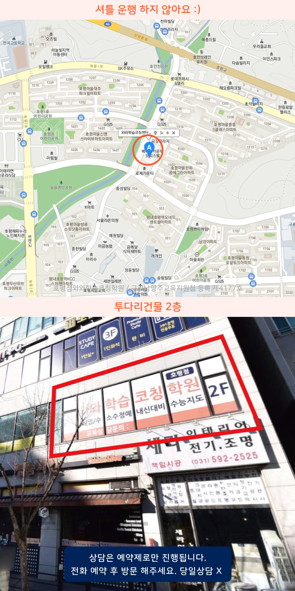

Area
평내호평역 고등영어학원
평내호평역 인근에서 고등영어학원을 찾는 분들이 많아요. 호평동과 호평마을, 호평지구 쪽은 통학 동선이 좋아서 학습 루틴을 만들기 편하다는 이야기를 자주 들어요. 고등학생영어학원에서는 수업 전 진단을 바탕으로 독해와 문법을 연결해 다음 단계로 가는 흐름을 잡아주고, 숙제와 피드백을 꾸준히 이어가도록 안내합니다.
Area
평내호평역 인근에서 고등영어학원을 찾는 분들이 많아요. 호평동과 호평마을, 호평지구 쪽은 통학 동선이 좋아서 학습 루틴을 만들기 편하다는 이야기를 자주 들어요. 고등학생영어학원에서는 수업 전 진단을 바탕으로 독해와 문법을 연결해 다음 단계로 가는 흐름을 잡아주고, 숙제와 피드백을 꾸준히 이어가도록 안내합니다.
Schools
평내호평역 인근에서 호평고 내신과 호평중 심화 영어를 위한 단원별 어휘 문법 점검으로 평가 대비가 탄탄해지고 복습도 확실히 챙겨 학습 방향까지 돕습니다.
Academy
호평동과 호평마을, 호평지구에서 고등학생 영어를 고민하는 가정은 비슷한 지점에서 막히곤 해요. 내신 기간이 다가오면 문제집을 많이 풀어도 점수가 제자리인 경우가 있고, 지문 독해는 되는데 단어와 문법이 흔들려 실수가 반복되기도 합니다. 이런 현상은 단순히 공부량 부족이라기보다, 시험에서 요구하는 문장 단위 처리와 오답의 원인을 정리하는 방식이 비어 있기 때문인 경우가 많습니다.
평내호평역 인근에서 고등영어학원이나 고등학생영어학원을 찾는 이유도 결국 이 부분을 잡기 위해서예요. 예를 들어 호평초나 구룡초를 거쳐 호평중과 호평고로 이어지는 과정에서, 중등 시기의 습관이 고등 내신에서 그대로 통하지 않는 경우가 있습니다. 학교 수업은 같은 지문이라도 난도가 올라가면 정답을 가르는 단서가 달라지는데, 학생이 표시한 줄글을 그대로 넘기거나 해설을 읽고 끝내면 다음 비슷한 유형에서 같은 실수를 반복하게 됩니다.
그래서 학습은 단원별 진도보다 오답 관리가 중심이 되어야 합니다. 단순히 틀린 문제를 다시 풀기보다, 왜 틀렸는지 문장 구조의 해석이었는지, 접속사와 지시어가 헷갈린 건지, 문장 내 생략이나 도치 때문이었는지 원인을 분류해 재발 방지 학습으로 이어져야 해요. 판곡초, 평동초처럼 학기 초부터 기초를 탄탄히 다진 학생도 고등에서는 독해 속도와 정확도를 함께 관리해야 하므로, 플래너로 주간 리듬을 만들고 정기적으로 점검하는 방식이 필요합니다.
학원을 고를 때는 수업만 보고 결정하기보다, 학생이 틀리는 패턴을 어떻게 기록하고 다음 학습에 연결하는지 확인해 보세요. 호평지구에서 통학을 고려하더라도, 학생별 학습 점검이 실제로 오답 근거와 연결되는지, 문법과 독해가 따로 놀지 않게 운영되는지, 그리고 시험 전후로 어떤 기준에서 학습량과 집중도를 조절하는지 살펴보면 시행착오를 줄일 수 있습니다. 판곡고나 주변 학교 학생들이 공통으로 겪는 부분이 결국 이런 관리의 차이로 나타나기 때문이에요.

Programs


교과 과정에 필요한 필수 어휘를 익히고 문장 구조를 분석하며 정확하게 읽는 연습을 진행합니다. 중등 과정에서는 학교 시험에 필요한 기본기를 쌓고, 고등 과정에서는 긴 지문과 다양한 유형에 익숙해질 수 있도록 학습 범위를 넓혀갑니다.
단원별 핵심 원리를 이해한 후 기본 문제부터 심화 유형까지 난이도를 조절해 학습합니다. 풀이가 막히는 지점을 확인해 필요한 개념으로 다시 돌아가고, 비슷한 문제를 반복 적용하며 혼자서 풀이를 완성하는 능력을 키웁니다.
작품의 주제와 표현 방식을 살펴보고 비문학 지문에서는 핵심 정보와 글의 흐름을 찾는 방법을 연습합니다. 교과 학습과 시험 문제를 연결해 지문을 정확하게 읽고 답의 근거를 찾는 능력을 길러갑니다.
학생별 학습 목표와 현재 성취도를 고려해 필요한 학습량과 수업 방향을 조절합니다. 수업 중 이해 여부를 바로 확인하고 부족한 부분은 반복 설명과 개별 피드백을 통해 보완하여 학습 내용이 제대로 자리 잡도록 지도합니다.
Map

APPLY
순차적으로 연락드려 예약 도와드립니다.
Guide
네. 같은 학년이라도 이해도와 취약한 단원이 다르기 때문에 학생의 현재 수준을 먼저 확인합니다. 이미 익숙한 내용은 빠르게 정리하고 부족한 부분은 충분히 보완하며 개인별 학습 속도에 맞춰 진도를 조절합니다.
학교별 시험 일정과 범위를 확인해 평소 학습과 시험 대비를 연결합니다. 영어·수학·국어 과목별 핵심 내용을 정리하고 취약 유형과 오답을 반복 점검하면서 내신 준비가 체계적으로 이루어지도록 관리합니다.
수업 진도뿐만 아니라 과제 수행, 복습, 오답 정리 등 공부 과정도 함께 살펴봅니다. 학생이 무엇을 공부해야 하는지 스스로 알고 실천할 수 있도록 학습 계획을 세우고 꾸준한 공부 습관을 만들어갈 수 있게 지도합니다.
| 횟수 | 초등 | 중등 | 고등 |
|---|---|---|---|
| 주 5회 | 339,000원 | 336,000원 | 419,000원 |
| 주 4회 | 279,000원 | 301,000원 | 344,000원 |
| 주 3회 | 219,000원 | 236,000원 | - |
| 횟수 | 초등 | 중등 | 고등 |
|---|---|---|---|
| 주 5회 | 389,000원 | 416,000원 | 469,000원 |
| 주 4회 | 319,000원 | 341,000원 | 384,000원 |
| 주 3회 | 249,000원 | 266,000원 | - |
학년, 과목, 수업 시수, 지역에 따라 수업료가 달라질 수 있습니다.